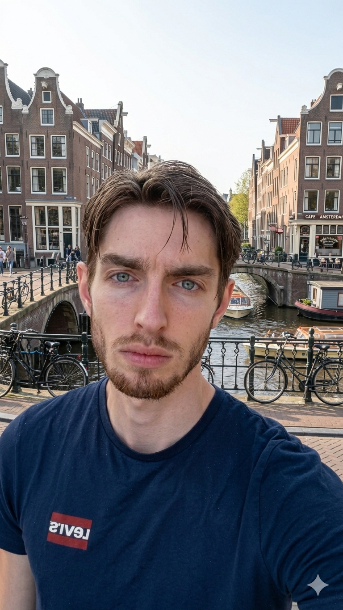

Ik help bedrijven hun digitale uitdagingen op te lossen met moderne technologie en creativiteit
Mijn werk bekijken
Ik ben een veelzijdige developer met een passie voor innovatieve oplossingen. Met ervaring in webontwikkeling, cloud infrastructure en complexe systemen, help ik organisaties hun digitale transformatie te realiseren.
Gewerkt aan een krachtige CO2-berekenaar met modulaire aanpak en wetenschappelijk gevalideerde gegevens. Het systeem helpt bedrijven hun ecologische voetafdruk te verminderen en financiële voordelen te behalen via subsidies zoals de Energie-investeringsaftrek (EIA) en Milieu-investeringsaftrek (MIA).
Ontwikkeld een gespecialiseerd boekhoudprogramma voor buitengewone varkens(houderijen). Een slim systeem voor complexe administratieve processen in de agrarische sector.
Uitgevoerd twee belangrijke projecten voor de digitale tak van gemeente Amsterdam:
Een uitdagend semester met 4 sprints van 3 weken. Werken aan innovatieve projecten die de maatschappelijke impact van technologie kritisch onderzoeken. Focus op samenwerking, iteratie en kwaliteit.
Een innovatief platform waar gemeentes in Nederland OV-kaarten kunnen aanmaken en versturen naar vluchtelingen en personen in asielzoekerscentra. Het systeem helpt mensen mobiliteit en oriëntatie te verbeteren. Gebouwd van A tot Z.
Bezoek site →Een professionele website voor mijn zwager's zaak. Clean design met focus op user experience en duidelijke informatiestructuur voor klanten.
Bezoek site →Een semester van 4 sprints (3 weken per sprint) gericht op het kritisch onderzoeken van de maatschappelijke impact van technologie.
Naast Dark Tech heb ik verschillende andere schoolprojecten voltooid, waaronder CO2-berekenaar (Kiat), boekhoudprogramma, en stages bij gemeente Amsterdam.
Ben je geïnteresseerd in samenwerking? Neem gerust contact op!